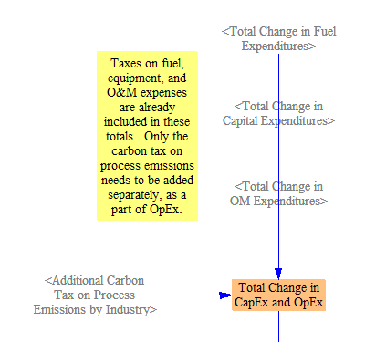
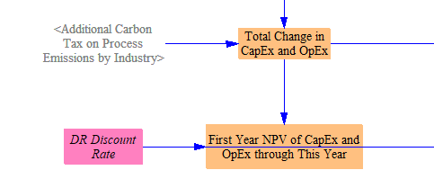
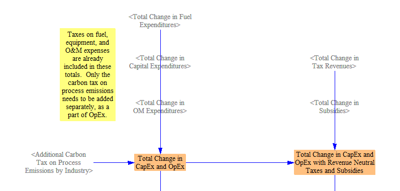

Note on the Cost of a Policy Package
One of the most common outputs in which a user might be interested is the economic cost of a policy package. The model calculates cash flow changes, representing the direct (first-order) transfers of money from one entity in the model to another, as a result of the active policy package. The EPS tracks these cash flows for nine different entities: government, labor and consumers, foreign entities, non-energy industries, natural gas and petroleum suppliers, electricity suppliers, biomass and biofuel suppliers, coal suppliers, and other energy suppliers. For each of these entities, users can further break down cash flow changes into changes in revenue (differentiated by domestic and export revenue for industries) and changes in energy and non-energy expenditures. Cash flow impacts to industries are further divided up by ISIC code for use in the input-output model.
In addition to understanding cash flow changes by entity or ISIC code, many users will wish to report overall costs or savings of a policy package. However, “cost” can be defined in more than one reasonable way. Since any money that is spent is received by someone else, the total of all these cash flow changes sums to zero. So, summing all cash flow changes is not a meaningful metric of policy cost.
In order to report the overall costs and savings of a policy package, we report the “Change in CapEx and OpEx” due to a package, which includes the change in capital expenditures, fuel and operational expenditures (including labor), and additional carbon tax on process emissions. This metric does not include subsidy payments, as these are considered cash transfers, rather than capital or operational expenditures. The web application presents each of these components in addition to their sum to better demonstrate how much a policy package “costs.” This metric is similar to the sum of all cash flow changes, except we include only changes in amounts paid and exclude changes in amounts received. The changes in amounts paid can be positive or negative. For example, if a policy causes consumers to buy less fuel, then consumers have a positive cash flow change (because they have saved money on fuel), and the “Change in CapEx and OpEx” will be negative (because less money is being spent as a result of the policy package). It does not matter that the fuel industry is receiving less money, because changes in receipts are excluded from this cost metric.
In addition to the standard “Change in CapEx and OpEx” (which makes no assumption about how any revenues are used), the EPS features a version of this metric that assumes all taxes and subsidies (including additional carbon tax, if enabled by the user) are revenue-neutral. This version of the cost metric assumes changes in tax payments are offset by reductions in other taxes, so we subtract them from the policy package cost (and vice versa for subsidies). (Even though subsidies are not included in the regular “Change in CapEx and OpEx” metric, their withdrawal is included in the revenue-neutral metric, because this withdrawal is assumed to be funded by increased expenditures from the non-government cash flow entities, which would affect their CapEx and OpEx.) We include this option for two reasons. First, at least in the United States, much consideration of enacting carbon taxes has centered on making them revenue-neutral. Second, carbon tax payments can dominate other contributors to policy package cost, due to the sheer quantity of fuel that is purchased to operate the economy. (A carbon tax reduces fuel demand in accordance with various elasticities of demand, but these demand reductions are not enough to compensate for the higher cost of the fuel that is still sold.) This can make policy packages appear expensive to model users (especially those who only interact with the model via the web application interface), as they may not understand that the reported cost metrics are merely first-order cash flows that do not indicate the overall effect on the economy or on any actor’s welfare. In the real world, government may use tax receipts in ways that boost the economy by more than one dollar per dollar in receipts (for example, by investing in energy efficiency programs or public transit systems), or alternatively, in ways that are less productive and deliver fewer than one dollar of economic benefits per dollar spent. In this context, you might consider the revenue-neutral tax to assume exactly one dollar of economic benefits per dollar received by the government. If you wish to avoid this assumption and view outputs that deliver a consistent treatment of all cash flows, simply use the standard version of the cost outputs.
Lastly, a user concerned with the cost of a policy package should also look at the outputs for monetized public health and climate benefits: namely, avoided mortality from reduced particulates and avoided climate damages. (These are located on the on the Additional Outputs sheet.) Monetized benefits tend to outweigh the direct cost of policy packages in most cases.
Calculating Changes in Spending
The upper portion of the Cost Outputs sheet is laid out as a grid, with columns for each sector (Transportation, Electricity Supply, Buildings, Industry, District Heating, Hydrogen, LULUCF, and Geoengineering), Fuel Trade & Subsidies (not calculated on a sector-specific basis), the Cross-Sector Totals sheet, and the Total; and a row for each of the main types of outlay (spending on Fuels, Capital, Operations and Maintenance (OM), Taxes, and Subsidies). Within each row, the changes in spending, whether positive or negative, are summed up across all sectors. The result appears in the variable in the “Total” column.
When a sector does not contain a given type of spending (for example, there is no “OM” spending in the “District Heating” sector), that spot in the table contains no variable. When a sector contains more than one variable that contributes to the same type of spending (for example, capital spending in the Electricity Sector can come from construction of power plants, batteries, or transmission lines), then these are totaled on this sheet.
Useful Totals
First, we sum the changes in fuel, capital, and OM expenditures, as well as additional carbon tax on process emissions, to find the “Total Change in CapEx and OpEx.” The relevant structure is shown below:

We also show the total as net present value (NPV) in the first year of the model run, given the discount rate specified by the input data for this model version. Vensim will report a value in every year for NPV variables. All of these annual values represent NPVs of the cash flow in the model’s start year. As the model run continues, more and more payments or savings are included in the NPV total. As a reminder of this behavior, the variable is named “First Year NPV of CapEx and OpEx through This Year.” The relevant structure is shown below:

Revenue-Neutral Tax Package Costs
The “Total Change in Tax Revenues” and “Total Change in Subsidies” are calculated by summing changes in taxes and subsidies paid from each sector, as detailed above in the “Calculating Changes in Spending” section.
We then create a modified version of “Total Change in CapEx and OpEx” by subtracting out the change in tax revenues and adding in the total change in subsidies, as shown in the following model structure:
